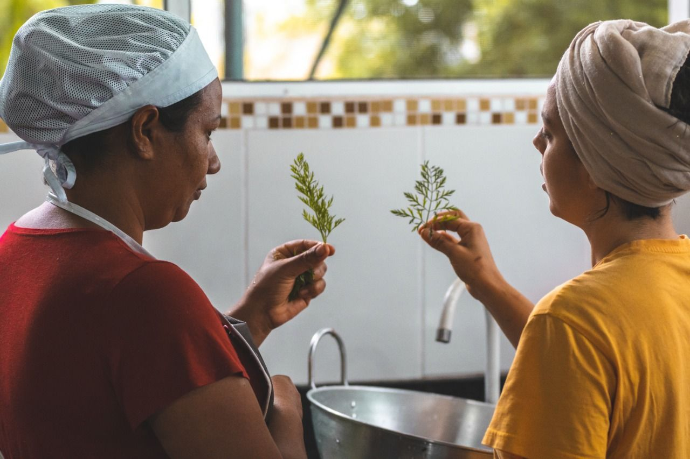

duLocal
Marmitas orgânicas que geram valor para toda a cadeia: quem produz, quem cozinha e quem come.

- Empreendedor
- Felipe Gasko
- Horta parceira
- Quinta da Boa Vista
- Cozinha
- Jardim Zavaglia
- Área
- Alimentação
Como surgiu
Uma parceria proposta por um empreendedor.
Diferente dos projetos Enactus mais típicos, o duLocal surgiu de uma proposta de parceria vinda de um empreendedor: Felipe Gasko, formado em Engenharia Ambiental pela Escola Politécnica da USP, com passagem pela Endeavor e paixão por impacto social, que decidiu criar um negócio social.

Por que São Carlos
Produção orgânica, desigualdade e demanda.
Felipe identificou em São Carlos pontos de produção de orgânicos com dificuldade de escoamento; notou que, apesar do título de “Vale do Silício Brasileiro”, a exclusão socioeconômica dos bairros periféricos (Cidade Aracy, Zavaglia) é evidente; e percebeu que a população da cidade poderia ser um público consumidor em busca de alimentação de qualidade.

Produção e cozinha
Da Quinta da Boa Vista à cozinha da Miriam.
A Quinta da Boa Vista foi a primeira horta de orgânicos prospectada, com potencial para atender uma demanda grande, mas com dificuldade de escoamento. A cozinheira é a Miriam, moradora do Jardim Zavaglia e apaixonada por culinária, capacitada em parceria com a chef Rafita Soldam. As produções acontecem às quartas, quintas e sextas pela manhã.

A cadeia
Três elos, um mesmo propósito.
Produtores locais cultivam alimentos orgânicos para cozinheiras da periferia, capacitadas por uma chef profissional, que preparam refeições naturais para consumidores que buscam qualidade e propósito. O time atuou potencializando as vendas e acompanhando as cozinheiras. O projeto se expandiu para São Paulo e tomou grandes proporções, o que encerrou a atuação do nosso time.
Esse projeto terminou. O impacto continua.
Conheça os projetos ativos do time e veja como acompanhar ou apoiar o que estamos construindo agora.